一、杆件平衡问题的特殊处理方法
任何一个物体受力平衡，至少要受两个力作用，当然也可以受多个力作用。现特别研究受两个力作用的杆件和受三个力作用的杆件平衡问题。因为多个力作用下的平衡问题在一定条件下，可以转化为三个力或两个力作用的平衡问题来处理。
1.平衡条件
一个可以看做质点的物体，它处于平衡状态是指处于静止或匀速直线运动状态，质点处于平衡状态的充分必要条件是
刚体的运动既可以是平动，也可以是转动，处于平衡状态的刚体，不具有线加速度和角加速度。所以刚体处于平衡状态的充分必要条件是
对于有固定转动轴的刚体，由于有固定转动轴的限制，故不会发生平动，已满足①式，因此有固定转动轴的物体的平衡条件只要满足②式即可。
在中学阶段，限于所研究的对象是二维空间的平面力系，故①式可以在选定的正交坐标系中写成分量式 \( F_x = 0,\; F_y = 0 \)；②式可以写成 \( M_{\text{顺时针}} = M_{\text{逆时针}} \)。
2.二力作用下物体平衡问题
如果物体（杆件）只受两个外力 \( F_1 \)、\( F_2 \) 作用而处于平衡状态，这样的杆件称为「二力杆件」。由二力作用下物体的平衡条件可知：两个力 \( F_1 \)、\( F_2 \) 必须大小相等、方向相反，且作用在一条直线上。
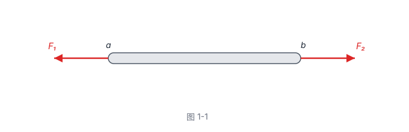
若二力作用在杆件的两个端点上时，不难证明，两力的作用线一定与杆件的轴线重合，如图 1-1 所示。若二力作用在杆件 \( ab \) 的两个端点上，力的大小相等、方向相反，但两力的作用线不在一条直线上，可以假设以任一点 \( b \) 为转轴，将有 \( M_{\text{合}} \neq 0 \)，杆件 \( ab \) 不可能平衡。
在不考虑杆件自身重量的条件下，如图 1-3 所示的支架系统均处于平衡状态，每个杆件都只有在两端受到力的作用，因此都为「二力杆件」。虽然支架的结构不同，但受力情况均相似，其中 \( AB \) 杆都受到拉力作用，而 \( BC \) 杆都受到压力作用。
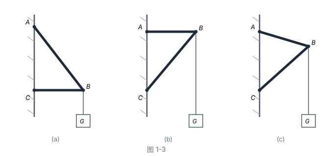
判断方法是：假设 \( AB \) 断开，则 \( BC \) 杆向下转动，所以 \( AB \) 杆受到拉力作用，故此 \( AB \) 可以用绳子代替；假设 \( BC \) 断开，则 \( AB \) 要向下转动，故平衡时 \( BC \) 有支撑作用，因此 \( BC \) 杆受到压力作用，\( BC \) 则不能用绳子代替。
求解方法：以图 1-3(a) 为例说明。通常认为 \( B \) 处受到三个力的作用：绳施于 \( B \) 点的拉力（大小 \( T = G \)），\( AB \) 杆施于 \( B \) 点的拉力 \( F_1 \)，\( BC \) 杆对 \( B \) 点的支撑力 \( F_2 \)。在 \( B \) 点，将 \( T \) 按力的作用效果分解为拉 \( BA \) 的力 \( F_1' \) 和压紧 \( BC \) 的力 \( F_2' \)。这样 \( AB \)、\( BC \) 都是二力杆件。先判断出力的方向，然后由共点力的平衡条件 \( F_{\text{合}} = 0 \) 求得未知力。再由牛顿第三定律，可知各杆件受到的压力和拉力的大小。
3.三个力作用下物体平衡的问题
若杆件只受互相不平行的三个外力作用而处于平衡，这种杆件称为「三力杆件」。由物体的平衡条件 \( F_{\text{合}} = 0,\; M_{\text{合}} = 0 \) 可知，这三个力必须共面共点。但「共点」只要求力的作用线交于一点，这一点不一定在物体上，如图 1-5 所示。
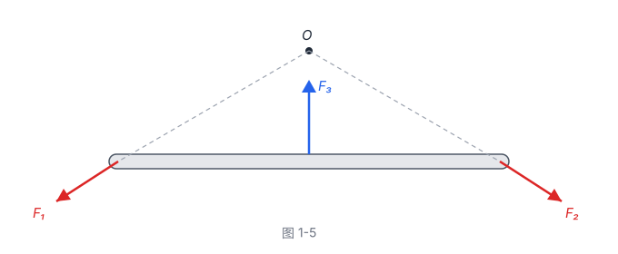
若 \( F_1 \)、\( F_2 \) 共点于 \( O \)，而 \( F_3 \) 的作用线不通过 \( O \)（如图 1-6 所示），则以 \( O \) 为轴，\( F_1 \)、\( F_2 \) 的力矩 \( M_1 = 0,\; M_2 = 0 \)，但 \( F_3 \) 的力矩 \( M_3 \neq 0 \)，所以合力矩 \( M_{\text{合}} = M_1 + M_2 + M_3 \neq 0 \)，因此物体不能处于平衡状态。
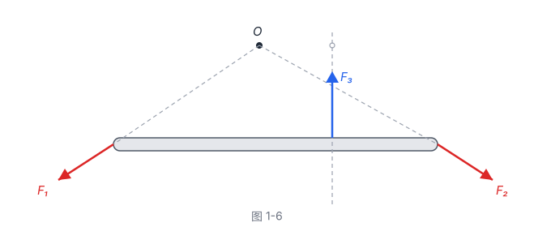
例 1长为 \(L\)、重量为 \(G\) 的均匀直杆 \(AB\) 放置在光滑的半径为 \(R\) 的半球形容器内
如图 1-7 所示，长为 \( L \)、重量为 \( G \) 的均匀直杆 \( AB \) 放置在光滑的半径为 \( R \) 的半球形容容器内。平衡时，杆与水平方向的夹角为 \( \theta \)（\( L > 2R \) ），求容器对杆的作用力。
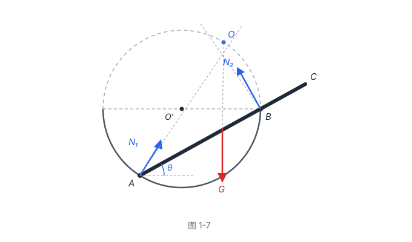
解对杆 \( AB \) 进行受力分析可知，它受重力 \( G \)，\( A \) 点的支持力 \( N_1 \) 和 \( B \) 点的支持力 \( N_2 \)，物体受三个共面力作用而处于平衡状态，则三个力必共点，也就满足 \( M_{\text{合}} = 0 \)。
以 \( A \) 为转轴，\( G \) 与 \( N_2 \) 对 \( A \) 点的力矩代数和为零，有
所以
因为 \( N_1 \)、\( N_2 \)、\( G \) 共点，故将三力沿力的作用线平移到共点 \( O \) 处，建立直角坐标系如图 1-8 所示。由共点力的平衡条件知 \( \sum F_x = 0 \)，所以
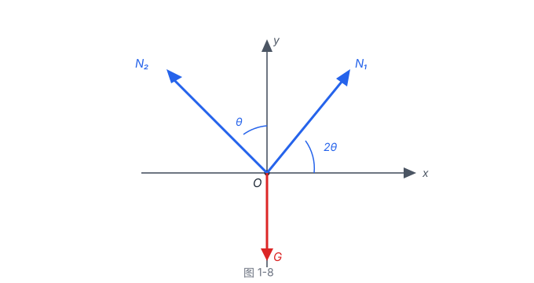
则
4.四力杆件平衡问题转化为三力杆件平衡问题
若处于平衡状态的杆件受四个力作用，而其中有两个力的作用线是平行的，这样的四力杆件可以转化为三力杆件。如图 1-9 所示，\( F_3 \)、\( F_4 \) 为同向平行力，可以合成为 \( T \)，因此 \( F_1 \)、\( F_2 \)、\( T \) 三力必然共点。
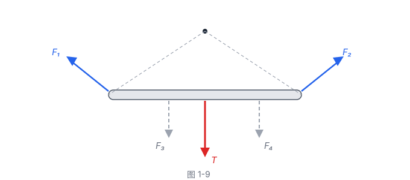
例 2不均匀木板的双绳悬挂
有一条长为 \( L \) 的不均匀的木板，将两根等长的细绳系于 \( AB \) 两端，将木板悬挂起来。如图 1-10 所示，平衡时 \( \angle AOB \) 为直角，且 \( AO \) 边与水平方向成 \( 15^\circ \) 角。当在木板上距 \( A \) 端 \( \dfrac{1}{4}L \) 处放上一质量为 \( m \) 的物体时，木板恰好水平，如图 1-11 所示。求木板的质量 \( M \)。
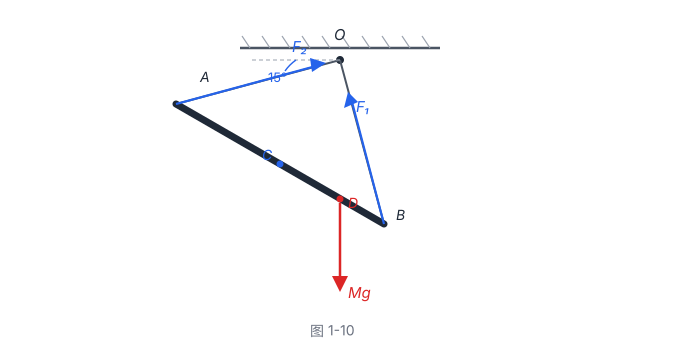
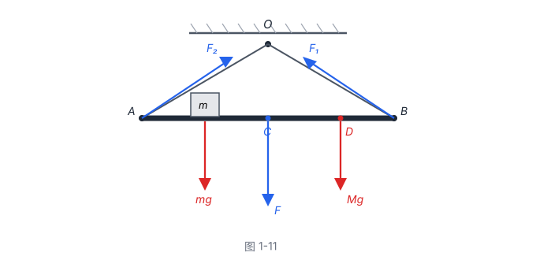
解没有放 \( m \) 时，\( AB \) 只受两个拉力 \( F_1 \)、\( F_2 \) 和木板重力 \( Mg \) 作用，为三力杆件，三力必在 \( O \) 处共点，所以不均匀木板的重力的作用线必通过 \( O \) 点。然后过 \( O \) 点作 \( AB \) 的垂线于 \( C \)，则 \( \triangle OAC \) 为等腰直角三角形，所以 \( \overline{OC} = \dfrac{L}{2} \)。在 \( \triangle OCD \) 中，\( \angle COD = 30^\circ \)，所以有
当放上 \( m \) 后 \( AB \) 水平，这时 \( AB \) 受到两个同向平行力 \( mg \) 和 \( Mg \) 作用，这两个力的合力为 \( F \)。由 \( AB \) 又受三个力作用，则力 \( F \) 的作用线必通过 \( O \) 点，即力 \( F \) 的作用点必在 \( C \) 处。
以 \( O \) 为转轴，由 \( M_{\text{合}} = 0 \) 可知 \( M_1 + M_2 + M_3 + M_4 = 0 \)。因为 \( F_1 \)、\( F_2 \) 的作用线通过 \( O \) 点，故 \( F_1 \)、\( F_2 \) 的力矩均为零，即 \( M_1 = 0,\; M_2 = 0 \)。又因为 \( M_3 = Mg \cdot \overline{CD} \)，\( M_4 = -mg \cdot \dfrac{L}{4} \)，所以
得
若处于平衡状态的杆件受四个力的作用，而其中有两个力作用在杆件上同一点，这样的四力杆件可以转化为三力杆件。
例 3均匀梯子斜靠在光滑墙上
如图 1-12 所示，均匀的梯子 \( AB \) 长为 \( L = 3.9\,\mathrm{m} \)，斜靠在光滑的墙上，梯子下端距墙脚 \( 1.5\,\mathrm{m} \)，梯子重 \( G = 360\,\mathrm{N} \)，求墙和地面对梯子的作用力。
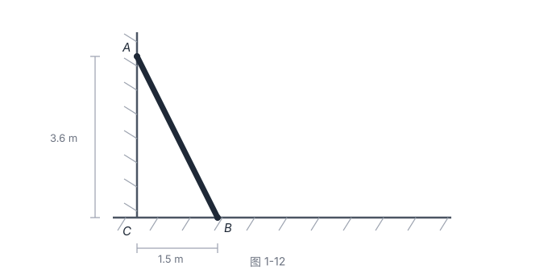
解对梯子受力进行分析可知：它受到重力 \( G \)，\( A \) 处给梯子的支持力 \( N_1 \)，\( B \) 处有两个作用力，一是地面的支持力 \( N_2 \)，另一个是地面对梯子的摩擦力 \( f \)。
其中 \( f \) 和 \( N_2 \) 是作用于 \( B \) 点处，因此梯子受四个力作用可以转化为三力作用。先将 \( f \) 和 \( N_2 \) 合成为地面对梯子的作用力 \( F \)，\( F \) 的作用线必通过 \( N_1 \) 和 \( G \) 的作用线的交点 \( O \) 处，因此 \( G \)、\( F \)、\( N_1 \) 三力共点。
在 \( \triangle ODB \) 中，\( \angle \theta = \angle DBO \)，则
将 \( G \)、\( F \)、\( N_1 \) 沿作用线平移至 \( O \) 点处，建立直角坐标系。由共点力的平衡条件可知
解得
所以
5.综合运用
例 4三铰拱的支座作用力
如图 1-15 所示为 \( ABC \) 三处用铰链连接的三铰拱，现在 \( AC \) 边的 \( C \) 点处施于水平力 \( F \)，三铰拱处于平衡状态，求支座 \( A \)、\( B \) 的作用力（拱的重量不计）。
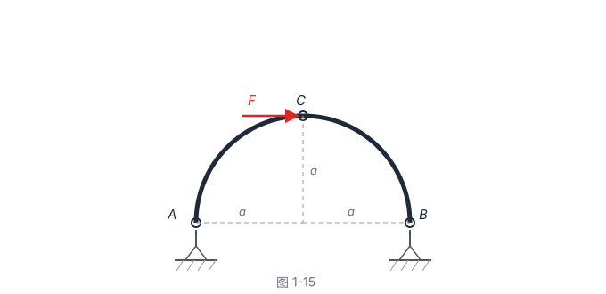
解由于重力不计，对三铰拱整体而言，只受三个力作用，根据平衡条件可知，这三力必须共点。先分析 \( A \)、\( B \) 两处受力的方向范围。
根据整体受力，在 \( F \) 作用时，整体平衡，要使整体不向右边平动，则 \( B \) 处的受力应向左上方，在 \( 90^\circ \) 的范围内；而 \( A \) 处受到支座的作用力，要使整体不向右翻倒，则应向左边拉，方向应在左下方 \( 90^\circ \) 范围内。由于 \( N_A \)、\( N_B \) 的方向有一定范围，因此三力共点一定在 \( F \) 作用线之上。有三种可能性：可能在 \( C \) 点，可能在 \( C \) 点左侧，也可能在 \( C \) 点右侧。
为了确定共点的位置，将三铰拱分成左、右两部分进行受力分析。对右边来说，\( B \) 点受力为 \( N_B \)，对 \( C \) 点来说，受到拱左边对右边的作用力 \( N' \) 的作用，因只受两个力作用，需要使 \( BC \) 平衡，则这两力必是一对平衡力，大小相等、方向相反，作用在一条直线上，这一直线必在 \( BC \) 的连线上。故 \( AC \) 部分受三个力作用，右边对 \( AC \) 的作用力为 \( N' \) 的反作用力 \( N \)，而左边受三个力作用，其中有两个力共点，则 \( N_A \) 的作用线也必须通过 \( C \) 点。由以上分析可知：三铰拱整体受三个力作用，且共点在 \( C \) 处。由整体考虑，\( N \) 与 \( N' \) 为内力，故将三个力移到一点计算。
由对称关系可知
所以
例 5双棒铰接的平衡与外力范围
如图 1-19 所示，一根细棒，上端 \( A \) 处用铰链与天花板相连，下端用铰链与另一细棒相连，两棒长度相等，两棒限于图示的竖直面内运动，不计铰链处的摩擦。当在 \( C \) 端加一适当的外力（在纸面内），可使两棒平衡在图 1-19 所示的位置处，即两棒的夹角为 \( 90^\circ \)，且 \( C \) 端正处于 \( A \) 端的正下方。
（1）不管两棒质量如何，此外力只可能在哪个范围内？试说明道理（不要求推算）。
（2）如果 \( AB \) 棒质量 \( m_1 \) 为 \( 1.0\,\mathrm{kg} \)，\( BC \) 棒的质量 \( m_2 \) 为 \( 2.0\,\mathrm{kg} \)，求此外力的大小和方向。
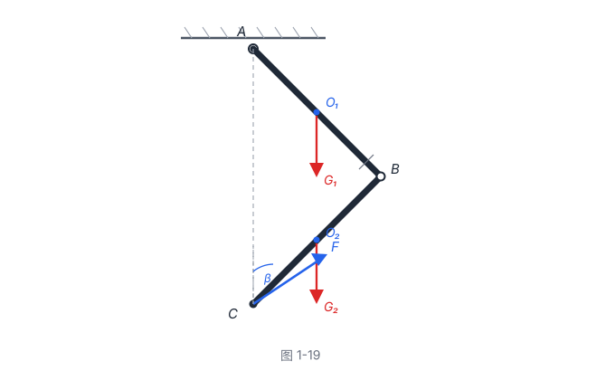
解（1）根据平衡条件 \( F_{\text{合}} = 0 \)，\( M_{\text{合}} = 0 \)，以 \( ABC \) 整体为对象，系统若处于平衡状态，\( F \) 的方向不可能指向 \( AC \) 连线的左侧，这是因为以 \( A \) 为转轴，若 \( F \) 的方向指向 \( AC \) 的左侧，则 \( F \) 与系统的重力都产生顺时针方向的力矩，系统就不能平衡。
同理，\( F \) 的指向也不能在 \( BC \) 的右下方，因为以 \( B \) 为轴，若 \( F \) 指向 \( BC \) 的右下方，则 \( F \) 与 \( BC \) 的重力都产生逆时针方向的力矩，\( BC \) 棒不能保持平衡。
由以上分析可知：\( F \) 的方向只能在 \( \angle ACB \) 的范围内，即 \( 0^\circ < \theta < 45^\circ \)。用同样的方法也可讨论天花板对杆 \( AB \) 的作用力 \( F_A \) 的方向范围。先作 \( CA \) 的延长线 \( AD \) 和 \( BA \) 的延长线 \( AE \)，以 \( B \) 为轴，\( F_A \) 不可能在 \( AE \) 线上或 \( AE \) 线的左侧，否则 \( AB \) 杆不能平衡。以 \( C \) 为转轴时，\( F_A \) 不能在 \( AD \) 线上或 \( AD \) 线的右侧，否则系统不能平衡。
从以上分析可知，天花板对 \( AB \) 棒的作用力 \( F_A \) 的范围在 \( \angle EAD \) 范围内，即 \( 0^\circ < \alpha < 45^\circ \)。
对 \( ABC \) 整体来看，只受三个力作用，即 \( F \)、系统的重力 \( G_1 + G_2 \)、\( F_A \)，系统要平衡，这三力必须共点，故 \( F \) 的作用线只能通过 \( O_1 O_2 \) 连线上的某一点。作 \( CO_1 \) 的连线，可知 \( F \) 的方向范围更小。有 \( \tan\beta \) 上限值为
故力 \( F \) 的方向范围为 \( 0 < \beta < \arctan \dfrac{1}{2} \)。
（2）以 \( A \) 为转轴，有
所以
以 \( B \) 为转轴，以 \( BC \) 杆为对象，有
所以
由 ① ÷ ② 得
即
所以
因为 \( m_1 = 1.0\,\mathrm{kg} \)，\( m_2 = 2.0\,\mathrm{kg} \)，所以
得
两边平方得 \( 49\sin^2\theta = 9\cos^2\theta \)，即 \( 49\sin^2\theta = 9(1 - \sin^2\theta) \)，所以 \( 58\sin^2\theta = 9 \)，解得
所以 \( \theta \approx 23^\circ \)，则
（2）如果 \( AB \) 棒的质量 \( m_1 \) 为 \( 1.0\,\mathrm{kg} \)，\( BC \) 棒的质量 \( m_2 \) 为 \( 2.0\,\mathrm{kg} \) 时，外力 \( F \) 的大小为 \( 19\,\mathrm{N} \)，方向与 \( AC \) 线的夹角 \( \theta \) 约为 \( 23^\circ \)。
- 对于某些待定的平衡对象，可以根据简单的平衡条件来判断未知力的作用线。
- 对多个有转动轴的平衡问题，对每一个转动轴都应列出平衡方程。
- 在平衡问题中，选取转轴的原则是：使未知力（非待求未知力）尽可能多地通过转轴，以减少方程的个数，便于求解。